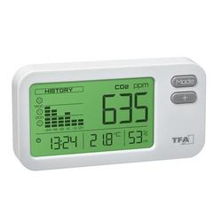
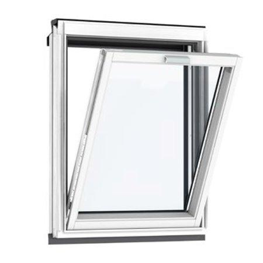

Internet of Things in business context
In dit hoofdstuk heb ik samen met Marc en Dirk voor problemen in de business oplossingen bedacht waar gebruik wordt gemaakt van IOT.
IoT in praktijk
Tijdens de lessen van Smart Technology hebben wij al kennis met IOT mogen maken. Voor het maken van de Plant watersysteem hebben wij hier er gebruik van gemaakt.De onderdelen die wij hebben gebruikt voor het maken van het Plant watersysteem kunnen ook anders gebruikt worden in de praktijk. Wij hebben een aantal ideeën bedacht, waarmee problemen vanuit de praktijk kan worden opgelost met behulp van IOT.
Wat is IoT?
IOT oftewel Internet of Things beschrijft dingen die omringd zijn door sensoren, software en andere technologieën die als doel hebben het verbinden en uitwisselen van gegevens met andere apparaten en systemen via het internet.Welke problemen?
Met IOT kan je verschillende problemen in het praktijk oplossen. Wij hebben drie problemen geformuleerd waar de praktijk last van heeft.De problemen zijn:
- Gevaarlijke koolstofdioxide die je niet kan ruiken.
- Onnodige verwarmingen die aanstaan.
- Planten krijgen teweinig licht.
Het anti-koolstofdioxide systeem
Het watering automatisering systeem bracht ons op meer ideeën, bijvoorbeeld een koolstof dioxide meter met een geautomatiseerd systeem om de ramen te openen.Waarom?
Koolstofdioxide is een groot probleem terwijl mensen dit vaak niet doorhebben. Bijvoorbeeld ‘s nachts wanneer wij slapen. Koolstofdioxide verspreidt zich door de lucht door uitgeademde lucht, en slecht werkende verwarmings- of verbrandingstoestellen (bijvoorbeeld kachels, open haarden, geisers en cv- of combiketels). Deze koolstofdioxide en die is niet meer geschikt voor inademen. Ook Op kleine afgesloten ruimten en kan het voorkomen dat gedurende de nacht de zuurstofgehalte dusdanig verlaagd dat men een té groot gedeelte aan koolstofdioxide inademt.
Gevolgen
Een van de gevolgen van het inademen van een te groot gedeelte aan koolstofdioxide is dat men wakker wordt met hoofdpijn en een slaperig gevoel. Omdat je hersenen niet genoeg zuurstof hebben ontvangen begint iemand met een koolstofdioxide probleem de ochtend op een naar gevoel minder fijne ochtend.In ernstige gevallen zijn de symptomen kan bewusteloosheid, coma, blijvende hersenschade en in het ernstigste geval zelfs de dood veroorzaken.
Oplossing
Het is begrijpelijk dat men vooral in de winter een warme slaapkamer heeft, om er toch voor te zorgen dat koolstofdioxide vergiftiging tegen wordt gegaan hebben wij het concept van geautomatiseerd ramen systeem bedacht.
Een sensor op de kamer meet gedurende de dag het koolstofdioxide gehalte. Deze sensor is op het smart systeem in het huis aangesloten waar het deze cijfers naar stuurt. Door het meten van de waarden weet het systeem wanneer de koolstofdioxide te hoog wordt, indien dit het geval blijkt te worden, wordt er een command naar de ramen gestuurd waarbij de ramen deels geopend worden. Door preventief te sturen hoeven de ramen niet geheel te openen waardoor niet alle warmte verdwijnt uit de ruimte en de wens van de mensen ook volbracht wordt.
Automatische verwarming
Tegenwoordige kun je verschillende soorten slimme meters en slimme thermostaten vinden op het internet. Deze apparaten kun je vaak al van afstand via je telefoon bedienen. Echter kunnen deze meters en thermostaten niet meten of er iemand aanwezig in een ruimte is. Wij kwamen op een idee hoe IOT kan toegepast worden zodat de verwarming kan ingesteld worden voor als er iemand aanwezig is in een ruimte.Waarom?
Vaak zijn bedrijven in het bezit van grote bedrijfspanden. In deze panden zijn vaak niet alle ruimtes tegelijk in gebruik. Toch staat de verwarming vaak overal tegelijkertijd aan, hierdoor worden ruimtes vaak onnodig verwarmd.Daarnaast vergeten mensen ook vaak om de verwarming uit te zetten, waardoor die onnodig aan blijft staan terwijl niemand aanwezig is.
Oplossing
IOT kan de oplossing zijn voor dit probleem. Door middel van sensoren die meten of er iemand aanwezig is in de ruimte kan de verwarming aan of uit worden gezet. Je hoeft als onderneming niet meer van je medewerkers te verwachten dat ze de verwarming uitzetten. Het IOT-systeem bestuurt de verwarming met behulp van sensoren die in de ruimte staan. De sensoren zullen de bewegingen moeten detecteren van mensen en vervolgens naar behoefte de verwarming aanzetten.Gevolgen
De verwarming zal door deze IOT-oplossing minder vaak aanstaan. Dit brengt mee dat het beter voor het milieu is. Verwarmingen stoten veel Co2 uit en dit is slecht voor het milieu. Co2 is één van de oorzaken dat de aarde opwarmt.Iedere onderneming heeft te maken met stookkosten. Wat zou het fijn zijn als je wat kan besparen op dit vlak. Door de oplossing zullen de stookkosten omlaag gaan.
Het geld wat onze oplossing een bedrijf bespaart kan weer ergens anders in geïnvesteerd worden. Er wordt namelijk niet meer onnodig gestookt, maar juist effectief gebruik gemaakt van de verwarming.
Er is op dit moment nog geen IOT-systeem die de verwarming bestuurt door middel van sensoren. Om dit te kunnen realiseren dienen bedrijven hiervoor geld te investeren. Dit systeem zal niet meteen beschikbaar zijn voor iedereen. De vraag is of bedrijven dit belangrijk genoeg vinden om hun geld erin te investeren.
Lichtsensoren in de praktijk
Het is bij de IoT-schakeling mogelijk om met behulp van de LDR-sensor (lichtgevoelige weerstand) de lichtwaarde te meten. Hiermee is het mogelijk om de hoeveelheid licht in de kamer te meten. Echter behoorde een onderzoek naar hoe het licht wordt gemeten en welke toepassingen er in de plantensector zijn niet tot de casus. Dit artikel beschrijft hoe een IoT-apparaat kan bepalen hoeveel licht een plant nodig heeft. Hierbij is gekeken naar de LDR die wij gebruikt hebben met voor de IoT-schakeling en de in de praktijk gebruikte LUX-meter en de PAR-meter.Waarom?
Licht is onmisbaar voor een plant. Planten gebruiken licht namelijk voor fotosynthese. Zonder fotosyntese sterven de planten af. Om licht juist te meten zijn er twee dingen waar je rekening mee moet houden. Als eerste de lichtintensiteit (hoe sterk het licht is) en als tweede de lichthoeveelheid (hoeveel uur).De lichtintensiteit wordt uitgedrukt in LUX. Een woonkamer heeft bijvoorbeeld 50 lux en zonlicht boven de 100.000 lux . Er is dus een wezenlijk verschil of je de plant in de woonkamer zet of in zon. Lux is de maatstaf voor de helderheid van licht dat zichtbaar is voor het menselijk oog te meten. Een luxmeter werkt door een fotocel te gebruiken om licht op te vangen. De meter zet dit licht vervolgens om in elektrische stroom. Door deze stroom te meten, kan het apparaat de luxwaarde berekenen van het opgevangen licht. Planten hebben voor de fotosynthese meer aan blauw en rood licht dan aan andere kleuren licht. Een LUX-meter is domweg niet in staat om deze verschillende kleuren licht te onderscheiden.
Als je dit wel wil doen moet je een PAR-meter aanschaffen. PAR staat voor Photosynthetic Active Radiation. PAR-meters zijn wel een stuk duurder dan LUX-meters. PAR-meters meten de kwantumflux (ook wel "fotonflux" genoemd), het aantal fotonen per vierkante meter per seconde. Een PAR-meter bestaat uit twee hoofdcomponenten: De sensor zelf die licht meet (meestal een fotodiode) en Een meter die metingen weergeeft en vaak registreert (ofwel een handheld-eenheid of een computer) .
De LDR-sensor is de goedkoopste, deze sensor meet de hoeveelheid licht die op de weerstand valt. De weerstandswaarde van een LDR wordt kleiner, naarmate de LDR sterker wordt belicht. Hierdoor kan de waarde van de weerstand sterk variëren. De toepassingen hiervoor zijn dan ook met name voor elektronica-experimenten.